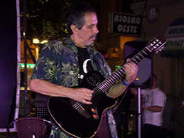

|
COMPOSICIÓN:
Música, Videoarte & Performances
ESCRITOS:
Artículos en revistas, prensa, libros
& sitios web
- Publicaciones
por tema
- Selección
de Artículos
"Mach
Schau!: The contribution of The
Beatles to the development of Visual
Music in Magical Mystery Tour."
Popular Music Studies Today.
Proceedings of the International
Association for the Study of Popular
Music 2017. Systematische
Musikwissenschaft. Julia Merrill,
ed. Wiesbaden: Springer, 2017. ISBN
978-3-658-17739-3, 186-201. Artículo
presentado en el IX Congreso de la IASPM
en Kassel, Alemania, 26-30 de junio, 2017.
'El
Carnaval de El Callao y el Calipso
Venezolano: Negociación entre Tradición
y Turismo.' Otilia Rosas
González y Emilio Mendoza. Carnavales y Nación.
Estudios sobre Brasil, Colombia,
Costa Rica, Cuba y Venezuela.
Marcos González Pérez, coordinador.
Bogotá: Intercultura Colombia, 2014,
170-201. ISBN:
978-958-99944-2-9.
Neofolklore,
Fusión
& Proyección, Merengue
Venezolano, Canción
de Protesta, Calipso
Venezolano.
Bloomsbury
Encyclopedia of Popular Music of the
World (EPMOW), Vol IX, Genres: Caribbean
and Latin America. David
Horn y John Shepherd, eds. Londres:
Bloomsbury Academic,
2014, 99-104.
ISBN: HB: 978-1-4411-4197-2.
'Carlos
Orta y Coreoarte: Aportes para la
Danza Contemporánea Venezolana'.
Revista Nacional de
Cultura, Año LXXIII, 2011, Nº 338,
Tomo II.
Caracas: Fundación Casa Nacional
de las Letras Andrés Bello,
211 - 223. ISSN:
0035-023.
'La
Composición en Venezuela: ¿Profesión
en Peligro de Extinción? Un Análisis
de Contradicciones', 2010. (Publicación
sólo en web)
"El
Cancionero de PTT: Prototipo de
preservación y difusión digital de
la música popular venezolana."
Música, Ciudades, Redes. Creación
musical e interacción social.
Actas del V Congreso de la
IASPM-España, X Congreso de la
SIBE (Sociedad de
Etnomusicología). Salamanca:
SIBE, 2008. ISBN-13:
978-84-612-7141-2.
- Artículos
en preparación
En torno al
Silencio, 05-12-2011-- 01-05-2019
- Libros
publicados/en preparación
- Sitios Web
Cancionero
Digital de PTT
(2013- en construcción)
SOVEB
- Sociedad Venezolana para el Estudio de
Los Beatles (2013)
SVMC -
Sociedad
Venezolana de Música Contemporánea
(2007)
Nuestra
Música - Texto digital para
el curso "Folklore Musical de Venezuela"
(2000)
FUNDEF
- Fundación de Etnomusicología y
Folklore, incluye el "Museo Virtual de
Instrumentos Musicales de Latinoamérica
y del Caribe" (1995)
- ARMÓNIX
- Metas de Vida
CURRICULA
CURSOS
EN LA UNIVERSIDAD SIMÓN BOLÍVAR,
CARACAS
|
|
 Jóspital, La
Laguna, Tenerife, junio, 2017
Jóspital, La
Laguna, Tenerife, junio, 2017

Boda
de Emiliana y Alberto,
Caracas, diciembre,
2016

ZOES,
Salamanca, España, julio, 2015
RESUMEN BIOGRÁFICO
Emilio
Mendoza fue el primer compositor
venezolano en ser seleccionado para
un festival de la ISCM en Boston
1976, cuando tenía 23 años y el
único hasta la fecha en ganar el
prestigioso Premio de Composición
Gaudeamus, en Holanda, 1978.
Dirigió, ejecutó y
compuso para la Orquesta de
Instrumentos Latinoamericanos ODILA
en Caracas, 1982-87, con producción
de giras, discos, video-arte y
danza. En 1995, desarrolló el
primer web cultural de Venezuela con
fotos, sonidos y videos, el “Museo
Virtual de Instrumentos Musicales de
Latinoamérica y del Caribe”,
convirtiéndose en referencia
digital en el país cuando ejercía la
presidencia de la Fundación de
Etnomusicológía y Folklore, FUNDEF,
en Caracas. Obtuvo
el Diploma en Composición en
Alemania, 1980 y el Doctorado en
CUA, Washington DC, 1990 y ha
sido galardonado con distinciones,
becas, premios y cargos
internacionales. Es Profesor Titular
Jubilado de la USB (1998 - 2013), y
genera un activismo ecológico,
especialmente con el silencio y el
entorno sonoro natural, a través de
la ejecución en la guitarra de su
música con el grupo Ozono Jazz, la
publicación de composiciones y
artículos, así como la investigación
audiovisual y etnomusicológica.
|

Residencia de
investigación A/V en el ZKM,
Karlsruhe, octubre, 2013, con una
beca de la DAAD

Concierto
con el grupo
Catálysis, Liceo
San José de Los
Teques, junio
1973
|